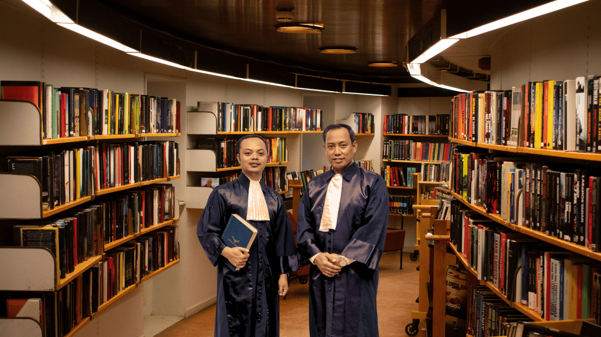

Mediator Non Hakim di Kabupaten Brebes, Tegal, dan Purwokerto: Siap Membantu Anda Menyelesaikan Sengketa dengan Damai

Jika Anda sedang menghadapi sengketa yang membutuhkan penyelesaian, baik itu dalam masalah keluarga, tanah, bisnis, atau perjanjian lainnya, mediator non hakim di Kabupaten Brebes, Tegal, dan Purwokerto dapat menjadi solusi terbaik. Mediator non hakim adalah pihak yang netral dan berkompeten dalam membantu menyelesaikan sengketa melalui mediasi, tanpa melibatkan proses pengadilan yang panjang dan mahal.
Mengapa Memilih Mediator Non Hakim?
Sebagai mediator yang berpengalaman di Kabupaten Brebes, Tegal, dan Purwokerto, kami memiliki keahlian dalam membantu pihak-pihak yang bersengketa untuk mencapai kesepakatan secara damai. Kami berkomitmen untuk memberikan proses mediasi yang efisien, mengurangi ketegangan antara pihak-pihak yang bersengketa, dan membantu mereka menemukan solusi yang menguntungkan semua pihak.
Mediation memberikan kesempatan bagi Anda untuk mencapai kesepakatan yang adil tanpa harus menunggu proses pengadilan yang lama dan menghabiskan banyak biaya. Proses ini juga lebih cepat dan lebih fleksibel, yang memungkinkan Anda untuk fokus pada solusi daripada konflik yang berkepanjangan.
Layanan Kami
Berikut adalah layanan yang kami tawarkan sebagai mediator non hakim di Kabupaten Brebes, Tegal, dan Purwokerto:
Mediasi Sengketa Keluarga: Kami siap membantu menyelesaikan masalah perceraian, hak asuh anak, pembagian harta, dan masalah keluarga lainnya melalui mediasi yang adil dan damai.
Mediasi Sengketa Tanah dan Properti: Kami membantu menyelesaikan sengketa terkait kepemilikan, batas tanah, pembagian warisan, dan masalah properti lainnya tanpa harus melalui jalur pengadilan.
Mediasi Bisnis dan Perjanjian: Jika Anda terlibat dalam sengketa bisnis atau kontrak, kami akan membantu Anda dan mitra bisnis Anda mencapai kesepakatan melalui mediasi yang konstruktif dan saling menguntungkan.
Mediasi dalam Sengketa Perburuhan: Kami juga dapat membantu dalam menyelesaikan sengketa antara pekerja dan pemberi kerja, terkait hak-hak pekerjaan atau masalah ketenagakerjaan lainnya.
Konsultasi Gratis dan Mudah
Kami paham bahwa mengatasi sengketa bisa sangat menantang dan sering kali menambah beban. Oleh karena itu, kami menawarkan konsultasi gratis agar Anda bisa mendapatkan pemahaman yang jelas tentang cara mediasi bekerja dan bagaimana kami dapat membantu Anda menyelesaikan sengketa Anda dengan cara yang damai dan menguntungkan. Anda dapat menghubungi kami melalui WhatsApp untuk mendapatkan informasi lebih lanjut.
WhatsApp kami di: 082325634795 atau 081330723891.
Kami akan segera merespons pertanyaan Anda dan memberikan panduan yang jelas tentang langkah-langkah yang perlu Anda ambil.
Kami Siap Membantu Anda
Apapun sengketa yang Anda hadapi di Kabupaten Brebes, Tegal, atau Purwokerto, tim mediator non hakim kami siap membantu Anda mencapai penyelesaian yang adil dan damai. Dengan pengalaman kami dalam mediasi, kami akan memastikan proses penyelesaian sengketa Anda berjalan dengan lancar dan efektif tanpa menambah beban atau ketegangan yang tidak perlu. Jangan ragu untuk menghubungi kami untuk konsultasi gratis dan biarkan kami membantu Anda menyelesaikan sengketa dengan cara yang lebih damai dan efisien.
Hubungi kami sekarang melalui WhatsApp di:
082325634795
081330723891
Kami siap membantu Anda!